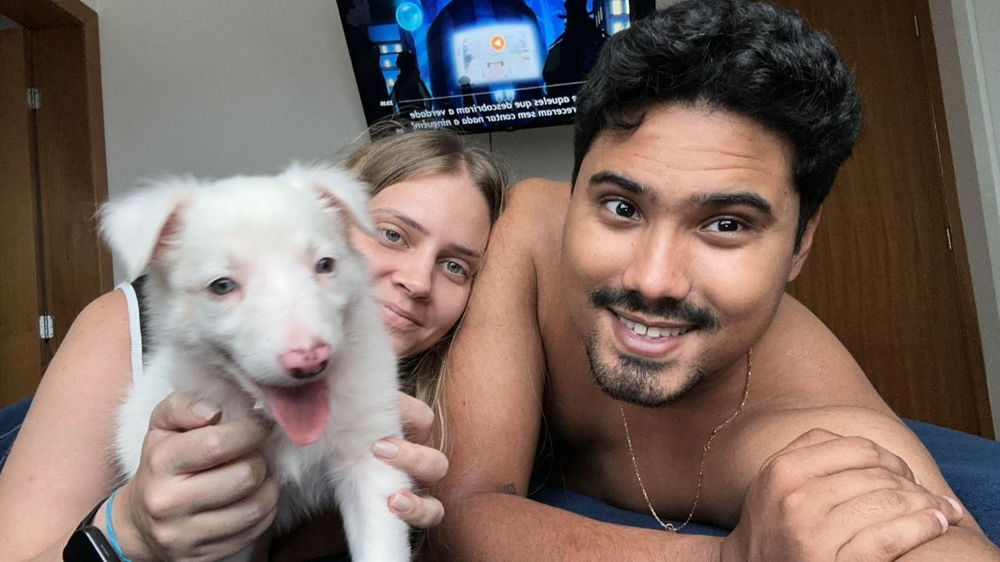

o evento
Sessão da Tarde
O Reino Desencantado


RH
PROIBIDO
"No Reino Desencantado, tão tão distante, onde o amor era proibido pelo RH e os crachás escondiam segredos, Clara não esperava que um simples evento da empresa pudesse mudar sua vida."
O Olhar
Bê
Clara
"quem é esse menino?"
"Tudo começou quando Bernardo, três anos mais novo, olhou para ela de um jeito tão fixo e nada discreto, que Clara só conseguiu pensar: 'quem é esse menino?'"
A Festa da Firma
RH alerta:
"melhor não se envolverem"
"No dia seguinte, em uma festa da firma, o destino deu seu segundo sinal: onde Clara ia, Bernardo aparecia. Se ela mudava de lugar, ele surgia por perto. A conexão era tão evidente que nem o RH conseguiu ignorar — e logo veio o alerta: 'melhor vocês não se envolverem por causa do trabalho.'"
O Regimento Interno
REGIMENTO INTERNO
Redigido por:
Clara Andrade
PROIBIDO
"Mas quando o coração resolve desobedecer ao regulamento interno, não tem política da empresa que segure (mesmo que ele tenha sido escrito pela própria Clara). Com uma desculpa qualquer, ela pediu o Instagram dele."
Stories, Mensagens
e The Office
"viu esse reel?"
"hahahaha sim"
"mais um?"
+999 reels
"Começava ali uma história feita de curtidas em stories, mensagens discretas e reels de The Office — mesmo Bernardo nem gostando de The Office, mas fingindo interesse com a dedicação de quem já estava completamente entregue ao papel."
O Convite
um mês depois...
"Até que, depois de mais de um mês de suspense, ele finalmente criou coragem para chamá-la para sair."
Conselheiro Mata
2023 · primeira viagem
"Vieram os encontros, a viagem para Conselheiro Mata e o início de um namoro no cenário menos óbvio possível: mato, barraca e carrapatos."
Luffy Entra em Cena

"Au au!"
Border Collie
duplo merle
duplo merle
"Mas toda grande história precisa de um personagem inesperado. E foi assim que entrou em cena Luffy, um Border Collie que parece albino, mas na verdade é duplo merle. Com ele, veio mais amor, mais pelos pela casa e uma boa dose de caos no roteiro."
O Vilão
SAÍDA
"CONTEXTO DE TRABALHO"
"Entre términos, voltas, conflitos, reconciliações e reviravoltas dignas de filme, Clara e Bernardo precisaram enfrentar o maior vilão da história: o contexto de trabalho. Por muito tempo, o Reino Desencantado bagunçou o caminho dos dois. Mas quando Clara finalmente saiu daquele cenário, eles descobriram que talvez o amor só precisasse de uma nova fase para acontecer do jeito certo."
De Repente 30
30
Clara · 30
"Agora, Clara está prestes a fazer 30 anos, ainda tentando processar que chegou oficialmente no enredo de De Repente 30."
Bernardo na Grand Line
Bê · 27
GRAND
LINE
LINE
"Bernardo vai fazer 27, seguindo sua aventura no melhor estilo One Piece: meio perdido às vezes, mas sempre com o coração no lugar certo."
A Festa
Piscina
Sauna
Comida
Drinks
Brasil na Copa
"Dois aniversários. Uma história improvável. Um cachorro no elenco. Brasil na Copa. Piscina, sauna, comida e drinks."
A Comédia Romântica
Uma comédia romântica
cheia de caos, amor & reviravoltas
"Uma comédia romântica cheia de caos, amor e reviravoltas."
Sessão da Tarde
Hoje na Sessão da Tarde:
Aniversário
13 · 06 · 2026
Aniversário
da Clara & Bê
13 · 06 · 2026
Dia 13 de junho, na Sessão da Tarde: Aniversário da Clara & Bê
Confirme sua presença
Pra gente organizar comida, bebida e estrutura, confirme sua presença até 05/06/2026.